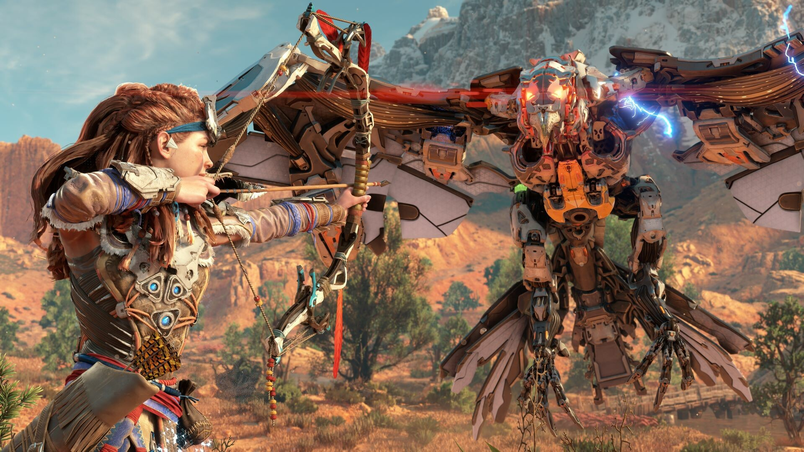

Análisis Horizon Zero Dawn Remastered, la aventura original con los gráficos de Forbidden West (PS5, PC)
Nixxes actualiza Horizon Zero Dawn con la tecnología de su secuela para que la primera aventura de Aloy luzca mejor que nunca.
Análisis de versiones PS5 y PC.
Si God of War fue la saga más emblemática o popular de Sony en PlayStation 2 y Uncharted en PlayStation 3, probablemente Horizon sea la licencia interna que más ha potenciado PlayStation en la última década. Secuela, serie en preparación, versión LEGO, un proyecto multijugador, un MMO desarrollado en Corea del Sur, un spin-off para realidad virtual, el tercer episodio de la trilogía… y ahora una remasterización del original. Seguramente los datos avalarán la decisión de volcarse en las aventuras de Aloy, y Horizon Zero Dawn Remastered es el último proyecto de este plan pero sólo durante unas semanas, hasta el lanzamiento de LEGO Horizon: Adventures (14 de noviembre).
Horizon Zero Dawn Remastered se filtró a finales de 2022 y la noticia se recibió entre los fans, en el mejor de los casos, de manera tibia. El primer Horizon (2017) fue todo un portento para PlayStation 4 y sirvió para cambiar la imagen que se tenía de Guerrilla Games, estudio asociado a los shooter Killzone, por un equipo preparado para los mundos abiertos con toque rolero y caza de bestias robóticas, con la tecnología de Decima Engine que exprimía como pocas a la pasada generación. Había más que dudas sobre el interés de ver una revisión de un juego tan reciente, sobre todo cuando desconocíamos la profundidad del remaster -una definición que abarca simples subidas de resolución a trabajos más cercanos al remake-.
Nixxes lleva Zero Dawn a la tecnología de Forbidden West
No nos centraremos mucho en Horizon Zero Dawn como juego, ya que juego original y expansión fueron tratadas en su momento -más la versión en PC-, y Horizon Zero Dawn Remastered -que incluye ambos contenidos- no presenta cambios en ese sentido. El remaster es obra de Nixxes, el estudio de PlayStation que desde la compra por parte de Sony se había dedicado a adaptar algunos de sus juegos a PC, pero que ahora también amplían su ambición a ocupar la vacante que habría dejado Bluepoint Games -actualmente ocupada en un "contenido original"-.
Horizon Zero Dawn Remastered tiene un precio de 49,99 euros en PlayStation 5 y PC, aunque también se puede adquirir como una mejora para poseedores del original por 9,99 euros, un precio que lo hace bastante más apetecible si por ejemplo te gustó la aventura principal pero no habías probado The Frozen Wilds, la zona con temática montañosa que aportó algunos de los enemigos más peligrosos del juego y potenció la ambientación en páramos helados; este es uno de los casos en los que adquirir Remastered tiene más sentido.
Gameplay

Nixxes ha explicado los cambios que, por ejemplo, introducen más biodiversidad, nueva vegetación y bosques más densos. Esto supone que efectivamente la dirección artística es un poco diferente en ciertos rincones de jungla, aunque lo que en Until Dawn (2024) alteraba las sensaciones -y era un juego diseñado principalmente para causar emociones- en este caso no creemos que sea un aspecto tan negativo; hay más interactividad con el entorno y la desarrolladora asegura que se inspira en el diseño conceptual que el Zero Dawn original no pudo mostrar al completo por las limitaciones técnicas del momento.
El jugador más purista quizás no esté muy contento con cualquier cambio artístico, pero está claro que Remastered busca algo más que mejorar el rendimiento.
Conclusiones
Probablemente quedan pocos jugadores de PlayStation que no han probado Horizon Zero Dawn, un juego que vendió bien -superaba los 24 millones en abril de 2023- e incluso ha sido regalado, pero no podemos olvidar que siempre habrá nuevos usuarios que todavía no han dado el primer paso en la piel de Aloy. Para ellos están pensados LEGO Horizon: Adventures y Horizon Zero Dawn Remastered, y la actualización a precio reducido puede ser un incentivo para jugarlo de nuevo con mejor aspecto que nunca.
El valor de Remastered por tanto depende de nuestro interés o cariño a una aventura épica con grandes momentos, ya sea escalando el primer Cuellilargo, descubriendo los misterios de un caldero o sobreviviendo a un Garrardiente en versión diabólica. Algo tiene para que hoy por hoy sea la saga más prolífica de PlayStation.